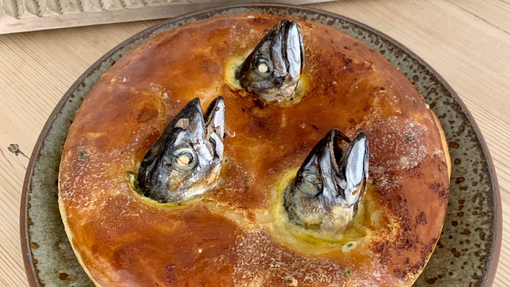

Stargazy Pie. The Many Eyed Pie.

Below is everything you need to make the Pie that Stares Back
Ingredients, simple really.
100g rolled short crust pastry
6 gutted Sardines
400gms Hake filets or diced Cornish fish
1 large chopped fennel
1 clove, peeled and chopped garlic
2 chopped tomato
1 tsp turmeric
1 tsp coriander
1 tsp cumin powder
1 egg
20ml vegetable oil
A pinch of Cornish Sea Salt.
A set of instructions so you don't summon an old stargazing God accidentally.
- Preheat the oven to 180 degrees.
- Heat a frying pan, add the vegetable oil, and soften the fennel, garlic and tomatoes, with spices and sea salt. Neatly arrange the diced up fish in a pie dish.
- Lay the sardines on the mixture, with their heads facing skywards. Roll the short crust pastry to fit the size of the pie dish.
- Cover the pie dish with short crust pastry, leaving the heads of sardines looking out of the pastry and seal the edges with egg wash.
- Bake in a preheated oven for 20 - 30 minutes.
- Serve Hot, with lots of dressed salad leaves and buttered potatoes.
Take a quick gander at the other delicacies?